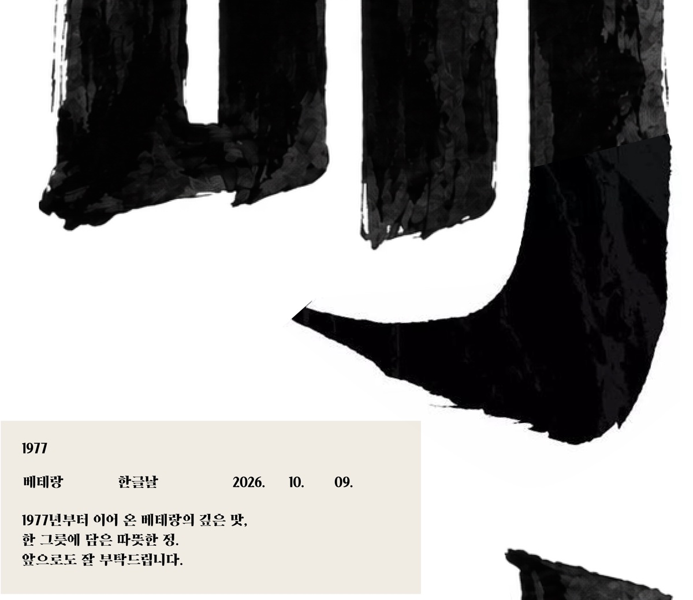

OUR STORY
VETERAN KALGUKSU
부드럽게 풀린 달걀, 고소한 들깨,
김과 고춧가루가 어우러진 칼국수.
베테랑의 익숙한 맛을 만나보세요.
AT YOUR TABLE
생각나는 날, 편안하게 꺼내어 즐기세요.
칼국수부터 만두와 콩물까지.
베테랑의 맛을 집으로 전합니다.



FROM OUR KITCHEN
정성껏 준비하는 주방과 한 그릇의 이야기.
베테랑의 일상은 인스타그램에서 이어집니다.